Peitoral e Triceps
1. Supino reto halteres comb
Séries: 4 Repetições: 12 Carga: 1 Descanso: 40 Obs:
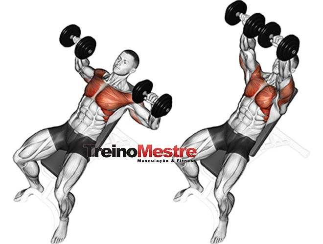
2. Supino inclinado halteres comb
Séries: 4 Repetições: 12 Carga: 1 Descanso: 40 Obs:
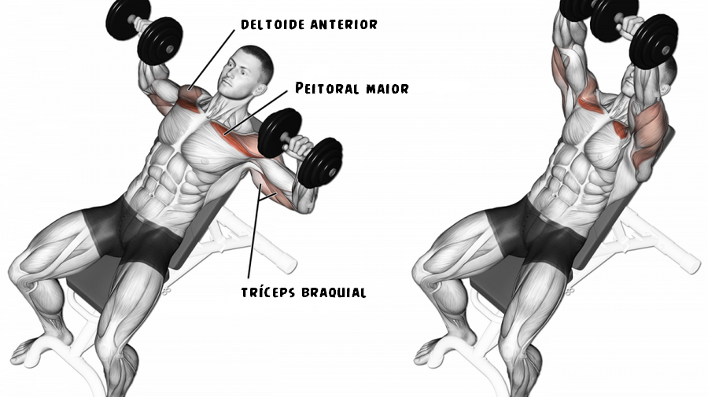
3. Flexão de braço
Séries: 4 Repetições: 12 Carga: 1 Descanso: 40 Obs: Combinado com inclinado

4. Crucifixo polia baixa simultaneo
Séries: 4 Repetições: 12 Carga: 1 Descanso: 40 Obs:
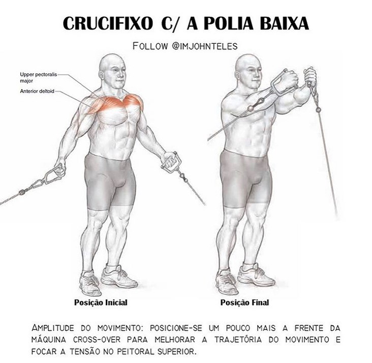
5. Desenvolv. halteres aberto comb
Séries: 4 Repetições: 12 Carga: 1 Descanso: 40 Obs:
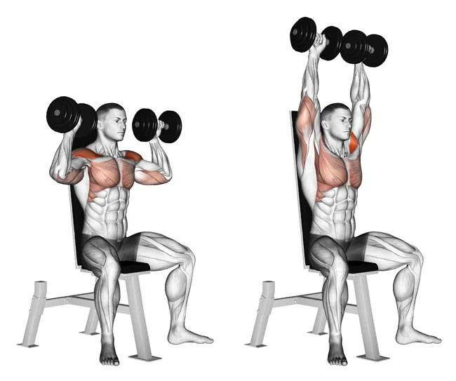
6. Elevação lateral halteres banco incl
Séries: 4 Repetições: 12 Carga: 1 Descanso: 40 Obs:
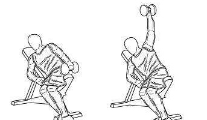
7. Triceps testa barra w
Séries: 4 Repetições: 12 Carga: 1 Descanso: 40 Obs:
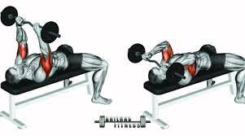
8. Triceps coice polia
Séries: 4 Repetições: 12 Carga: 1 Descanso: 40 Obs:
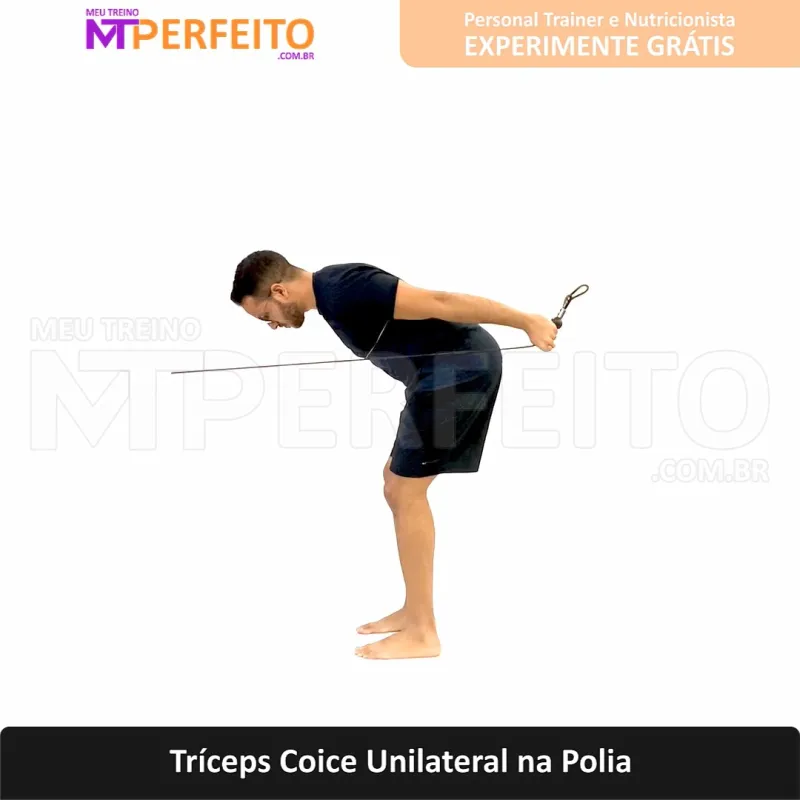
9. Esteira
Séries: Repetições: Carga: 1 Descanso: Obs: 10 minutos
Costas e Bíceps
1. Aerobico
Séries: Repetições: Carga: 1 Descanso: Obs: 10 minutos
2. Puxada alta barra romana frente
Séries: 4 Repetições: 12 Carga: 1 Descanso: 60 Obs:
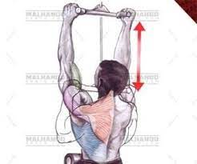
3. Remada curvada barra supinada
Séries: 4 Repetições: 12 Carga: 1 Descanso: 60 Obs:
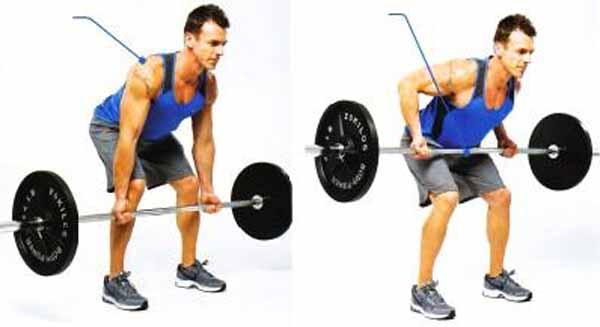
4. Remada cavalinho
Séries: 4 Repetições: 12 Carga: 1 Descanso: 60 Obs:

5. Remada unilateral
Séries: 4 Repetições: 12 Carga: 1 Descanso: 60 Obs:
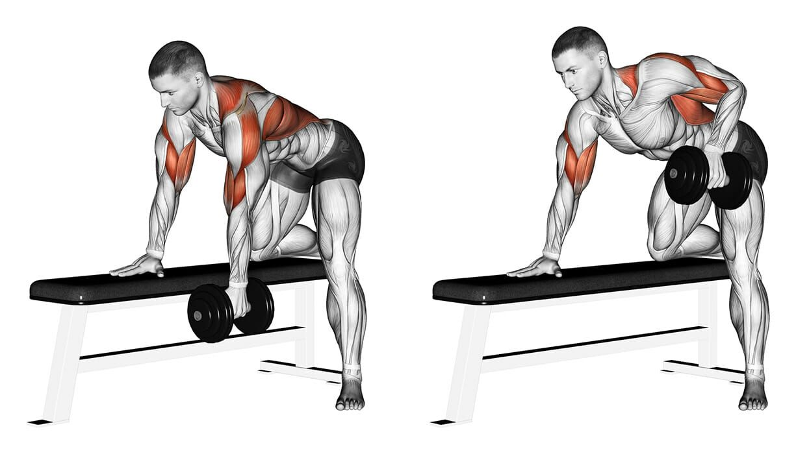
6. Rosca direta barra w 21
Séries: 4 Repetições: 12 Carga: 1 Descanso: 60 Obs:
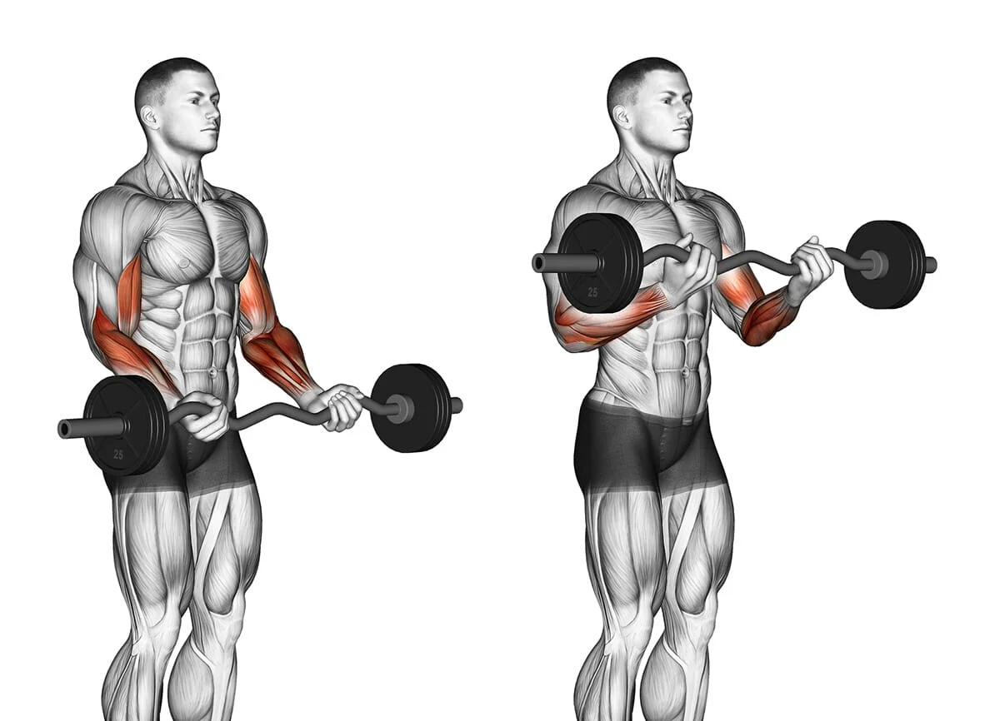
7. Rosca halteres combinada
Séries: 4 Repetições: 12 Carga: 1 Descanso: 60 Obs:
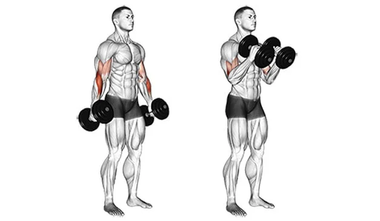
8. Rosca polia alta simultanea
Séries: 4 Repetições: 12 Carga: 1 Descanso: 60 Obs:
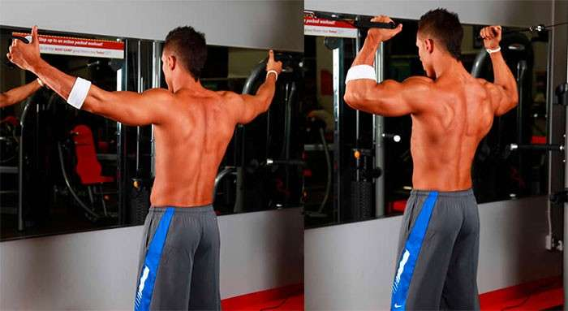